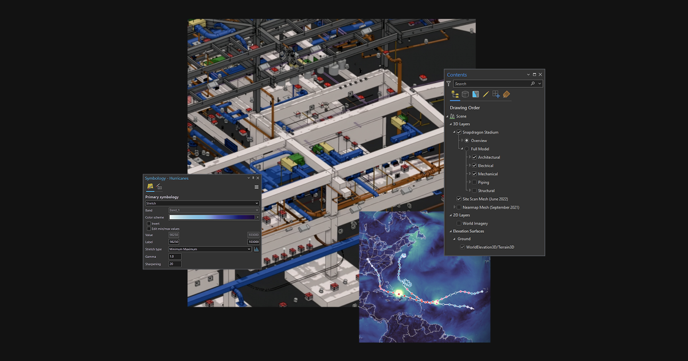
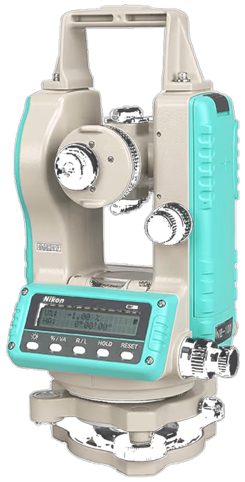
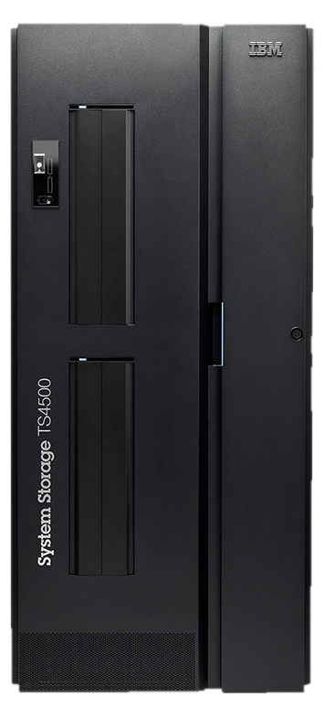
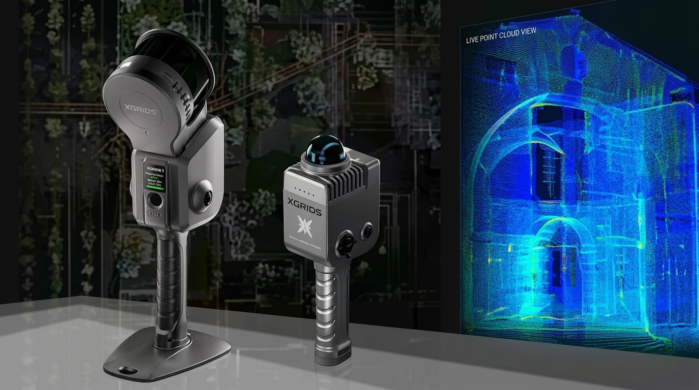

Our work in the field
Real KACO Systems field work: GNSS surveys, drone mapping, precision-agriculture demonstrations and industry events across Uganda.
 TrimbleGNSS · Total Stations · Scanning
TrimbleGNSS · Total Stations · Scanning DJI EnterpriseDrones · LiDAR · Dock
DJI EnterpriseDrones · LiDAR · Dock
Esri ArcGISGIS & SDI Spectra GeospatialGNSS & Robotic Stations
Spectra GeospatialGNSS & Robotic Stations
Nikon PrecisionOptical Survey US RadarGround Penetrating Radar
US RadarGround Penetrating Radar Seafloor SystemsHydrographic Survey
Seafloor SystemsHydrographic Survey
IBM Tape StorageEnterprise Data Archive
XGRIDSHandheld SLAM LiDARReal KACO Systems field work: GNSS surveys, drone mapping, precision-agriculture demonstrations and industry events across Uganda.